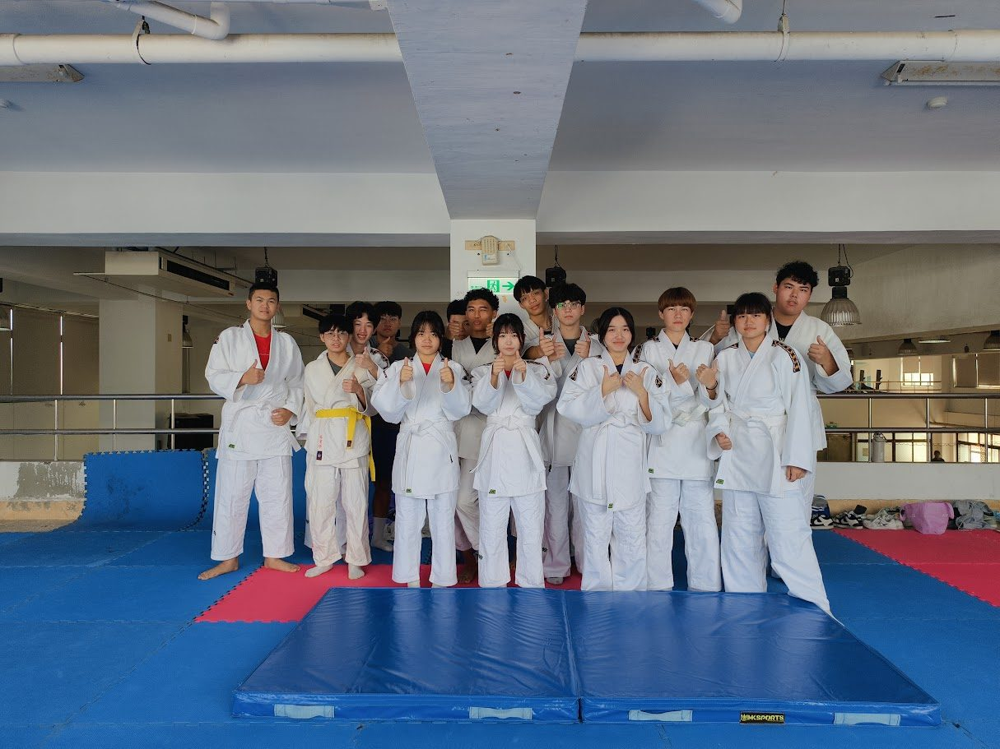
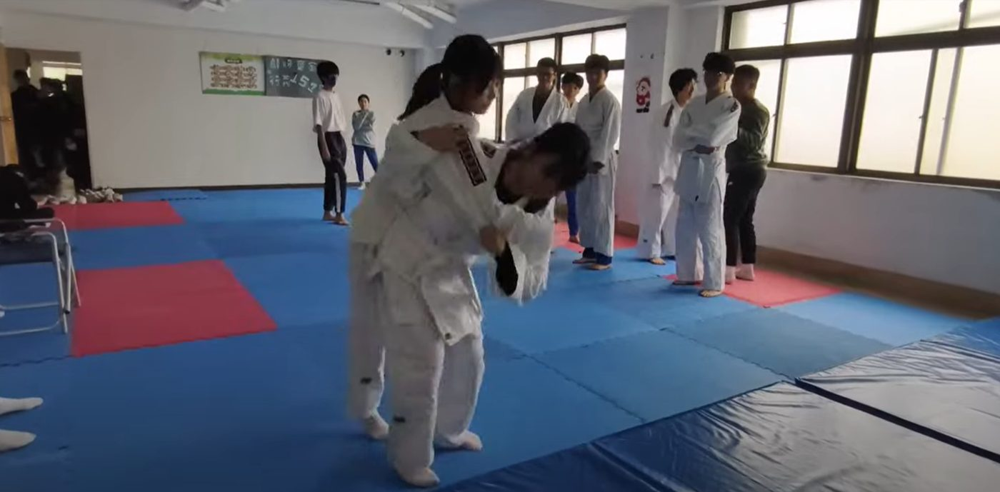
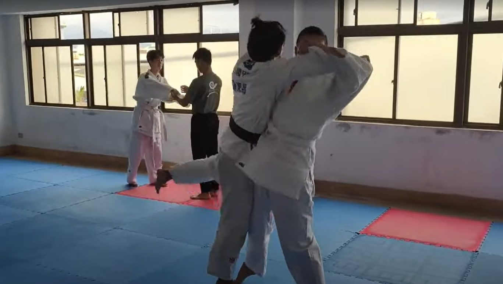
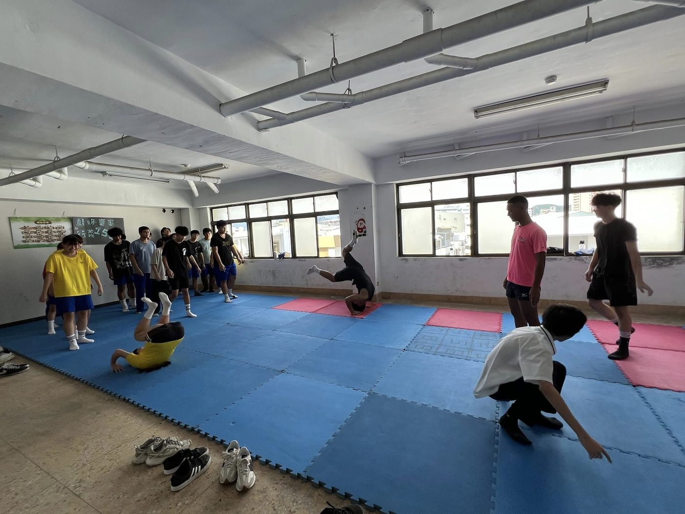

01我的故事
台東高商的體育發展一直以來都以籃球、排球、田徑等熱門運動項目為主，但在2024年，校園內出現了一個全新的力量——柔道社團的成立，為學校注入了新的運動活力。
柔道社團的成立源自於幾位熱愛柔道的學生，他們希望能在校園內推廣這項結合力量、技巧與精神修煉的運動。這些學生不僅熱愛柔道，也認為柔道的精神能夠幫助他們在學業與生活中培養毅力、尊重和自律的品格。儘管一開始面臨經費短缺和缺乏專業教練的挑戰，但學生們憑著對柔道的熱情，努力向校方提議，並得到了學校支持，柔道社團因此誕生。
在成立初期，社團成員們自發組織訓練，通過互相學習與外部教練的指導，逐漸在技術上取得了進展。他們不僅每天努力訓練，還積極參與全校體育活動，向同學們介紹柔道的文化與技藝。隨著社團逐漸成長，成員的實力也逐漸提升，讓更多的同學對這項運動產生了興趣。
柔道社團的目標不僅僅是成為一個課後活動，而是要逐步發展成為台東高商的柔道代表隊。這個夢想激勵著每一位成員不斷挑戰自我，並期待能在不久的將來，參加校際和全國性的柔道比賽，為學校爭光。
在柔道精神的指引下，這群學生展現出無限的潛力與堅毅。他們相信，透過不懈的努力與堅持，台東高商的柔道隊必將在競技場上崛起，為校園書寫一段屬於柔道的榮耀故事。




推薦理由
台東高商柔道社團剛成立不久，雖然面臨資源有限的挑戰，但社團成員展現出高度的熱忱與潛力。柔道不僅是一項體育運動，更是一種培養學生紀律、尊重與毅力的生活哲學。透過柔道訓練，學生們能在身心素質、團隊合作及競技精神上得到全面的提升。
然而，由於經費不足，社團在器材設備、教練聘任及參賽支援等方面仍有許多不足之處。這不僅限制了學生的訓練質量，也影響了他們參與外部比賽的機會。如果能獲得外界補助，我們將能為學生提供更完善的訓練環境，購置必要的護具和比賽裝備，並為他們聘請專業教練，進一步提升技術水平。
我們的目標是將柔道社團發展為校隊，參加全國賽事，為校爭光。希望能藉此補助，幫助這群熱愛柔道的學生追逐夢想，並推動台東高商柔道運動的長遠發展。